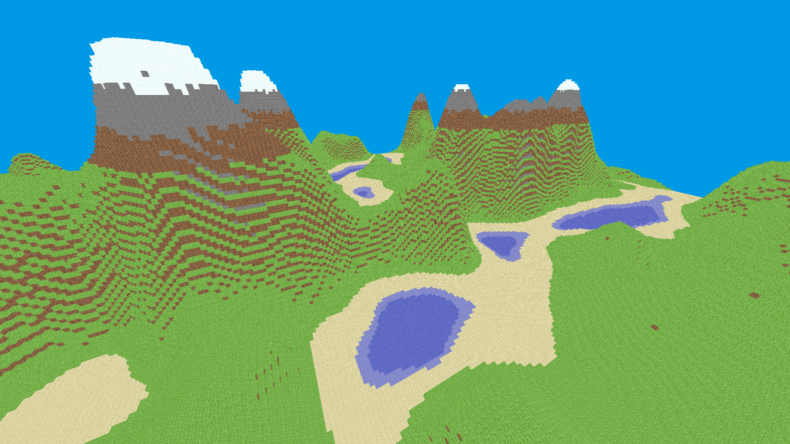
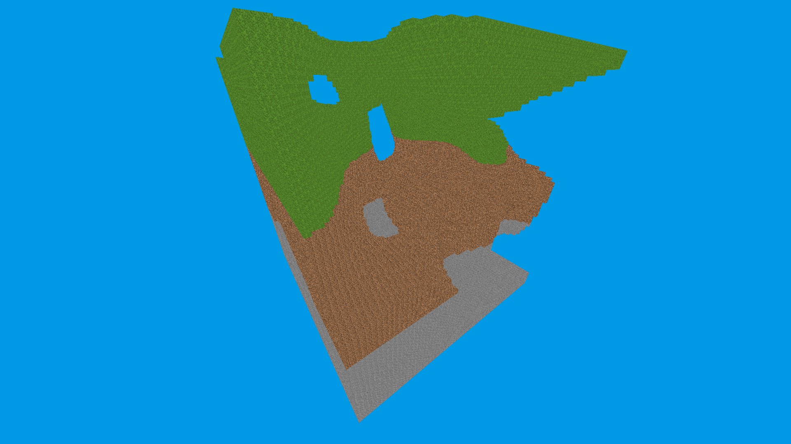

Projects
Head to my github for source code. All of these are pinned.
Head to my github for source code. All of these are pinned.
This is the latest video game I've been working on. It is a voxel based renderer written in C++ using OpenGL and CMake.
Here's a few pictures. It looks suspiciously like Minecraft.
 The original project was a from a college course that had semester long project on building a search engine. Originally written in Python.
I rewrote it in C as a fun challenge and I took the oppurtunity to write generic hashmaps in C. I improved single thread parsing time 25x by naively rewriting.
Writing an http server in C. Goal is to implement the minimum required to test this website on a local network.
Another College project. This rewrite is in progress. The new goal is to implement ssh-keygen. It can generate RSA key-pairs and crack given an RSA key-pair (only if it has a few hundred bits).